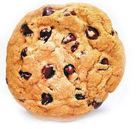

Recipes

Yummy Cookie
Much like cake, cookies are made from a soft, thick dough and are denser than an English biscuit.
When they are finished, cookies are larger, softer, and chunkier than their biscuit cousins.
To most of the rest of the English-speaking world, a biscuit is what Americans would refer to as either a cookie or a cracker.
Biscuits can be sweet (shortbread) or savory.
Ingredients
- flour, leaveners, salt,
- sugar, dairy,
- fats, extracts, spices
- other add-ins such as vanilla extract, and chocolate chips.
Steps
- Step 1
- Melt and brown your butter making sure all your ingredients are at room temperature.
- Step 2
- Use dark brown sugar and add egg yolk while using a cookie scooper.
- Step 3
- Line your baking sheet with a silicone mat or parchment paper and finish with sea salt.